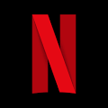
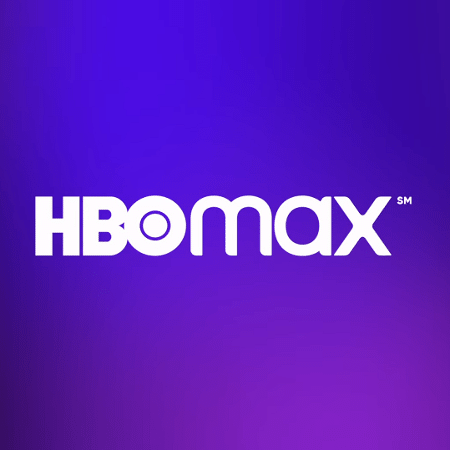
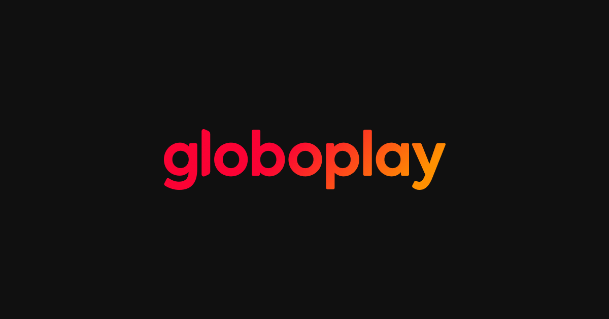

Detalhes sobre Streaming
Lista de Streaming
Netflix

Netflix é um serviço online de streaming norte-americano de vídeo sob demanda por assinatura lançado em 2010, disponível em mais de 190 países. Em março de 2023 superou 232 milhões de assinantes globalmente.
Prime Video
 Prime Video é um serviço online de streaming norte-americano de vídeo sob demanda por assinatura lançado em 2006, disponível em mais de 200 países, de propriedade e operado pela Amazon.com Inc. Este oferece programas de televisão e filmes para aluguel ou compra.
Prime Video é um serviço online de streaming norte-americano de vídeo sob demanda por assinatura lançado em 2006, disponível em mais de 200 países, de propriedade e operado pela Amazon.com Inc. Este oferece programas de televisão e filmes para aluguel ou compra.
Disney+
 Disney+ é um serviço de streaming over-the-top de vídeo sob demanda por assinatura de propriedade e operado pela divisão Media and Entertainment Distribution da The Walt Disney Company.
Disney+ é um serviço de streaming over-the-top de vídeo sob demanda por assinatura de propriedade e operado pela divisão Media and Entertainment Distribution da The Walt Disney Company.
HBO MAX

Max é um serviço de video sob demanda global operado pela empresa Warner Bros. Discovery, a proprietária da Warner Bros, um dos cinco maiores estúdios de cinema de Hollywood.
Globoplay

Globoplay é uma plataforma digital de streaming de vídeos e áudios sob demanda, desenvolvida e operada pela Globo. Lançada em 3 de novembro de 2015, consagrou-se em 2020 com a marca de 20 milhões de usuários e tornou-se líder nacional de streaming.